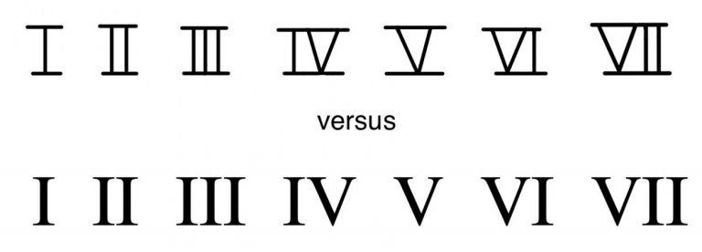

顺阶和弦与罗马数字：一眼看穿一首歌的骨架
在大调音阶的 7 个音上只用调内音叠三度，必然产生 7 个固定性质的顺阶和弦：I ii iii IV V vi vii°。学会用罗马数字与纳什维尔数字替代死记硬背的字母名，扒歌、移调、用变调夹都将变成同一件事。
1. 全局地图
2. 逐个概念
① 大调顺阶三和弦与七和弦的诞生
- 是什么
- 只使用 C 大调白键（C D E F G A B），从每个音开始往上隔一个音挑三个音，自然生成：C(I) – Dm(ii) – Em(iii) – F(IV) – G(V) – Am(vi) – B°(vii°)。再往上叠一个调内音，得到：Cmaj7 – Dm7 – Em7 – Fmaj7 – G7 – Am7 – Bm7♭5。
- 为什么需要
- 所有大调结构完全一样！记住
大 小 小 大 大 小 减，换到 G 大调或 A 大调直接套公式就能秒报全套和弦。 - 在指板上
- 在 5 弦/6 弦上横向推动这一列和弦，或者去本站「指板与五度圈」实验室点任意调名直接听完 7 个顺阶和弦。
- 听起来
- 常见误解
- “顺阶和弦表是死规定。”它不是谁规定的，而是大调音阶 W-W-H-W-W-W-H 的数学必然结果。
② 罗马数字与纳什维尔数字系统
- 是什么
- 罗马数字用大小写区分性质（I IV V 大，ii iii vi 小，vii° 减）；乐队排练更常用纳什维尔数字
1 2m 3m 4 5 6m 7°。把《Stand By Me》写成I – vi – IV – V后，主唱喊“升一个全音”，你不需要重新背谱，只需全部高两品弹。 - 为什么需要
- 这是职业吉他手和只会弹几个开放和弦的业余玩家最大的分水岭。
- 在指板上
- 在 5 弦 3 品 C 起手练
I–IV–V–vi（C–F–G–Am），然后手型关系不变整体平移到 5 弦 5 品（D 调）和 5 弦 7 品（E 调）。 - 听起来
- 常见误解
- “C–F–G 和 G–C–D 是两组完全不同的和弦。”在功能耳朵里它们完全是同一套东西（I–IV–V），只是音高海拔不同。
③ 找调的三条黄金线索
- 是什么
- 1) 集合匹配：所有和弦同时属于哪个大调（如 G、D、Em、C 属于 G 大调，1 个升号 F♯）；2) 家感（Home）：歌曲段落末尾、副歌核心和旋律最终落在哪；3) V→I 或大 V 线索：如果看到 B7→Em，说明中心在 E 小调而非 G 大调。
- 为什么需要
- 网络和弦谱往往写错调性标注，一切必须以你耳朵里谁最稳定像“家”为准。
- 在指板上
- 关系大小调（如 G 大调与 E 小调）拥有一模一样的一套顺阶和弦，判断归属只能听旋律终点与重音位置。
- 听起来
- 常见误解
- “一首歌的第一个和弦就是它的调。”大量流行摇滚从 IV、vi 或 ii 起手（例如《Sweet Child》或很多华语抒情从 IV 开始），千万不能看开头就定调。
④ 变调夹（Capo）的理论本质
- 是什么
- 变调夹相当于临时把空弦品格（琴枕）往高品推。如果用 C 指型夹在 2 品，所有手指相对夹子的级数关系完全是 C 调，实际声音全部升高 2 个半音 = D 大调。
- 为什么需要
- 变调夹不只是为了降难度：夹高品位（如 Capo 7 弹 D 指型 = A 调）能保留高音清脆的空弦共鸣音色（《Here Comes the Sun》）。
- 在指板上
- 推算公式：
实际调 = 指型调 + 夹品数；反推：想用 G 指型弹 B♭ 调 = 夹 3 品（G+3半音=B♭）。 - 听起来
- 常见误解
- “用了变调夹就不是在弹那个调了。”记住：跟乐队贝斯手沟通时，必须报出“实际音高”（Capo 2 弹 G 指型时，贝斯手要弹 A、D、E！）。
3. 交互指板与伴奏实验室
点下方预设快速切换把位与音阶/和弦；点任意一格都能发声，开启持续音即可直接对着指板练习即兴与听辨。
4. 上琴练习
- 五调顺阶默写表（限时 2 分钟）：在白纸上列出 C、G、D、A、E 五个大调的 7 个顺阶三和弦与七和弦，合上再默写一遍。重点验证：按节拍稳定、说得出级数与音名。
- 5 弦横按级数平移（75 BPM）：用 5 弦根音横按弹 I–IV–V–vi，在 C、G、A 三个调连续不间断切换，口喊级数。重点验证：按节拍稳定、说得出级数与音名。
- 5 首歌真谱定调标级数（每首 3 分钟）：找 5 首流行/摇滚和弦谱，先盲听找家，再写下罗马数字，标记调外和弦。重点验证：按节拍稳定、说得出级数与音名。
- Capo vs 无 Capo 移调（实践对比）：把《Knockin' on Heaven's Door》从 G 调移到 A 调和 D 调，分别用横按和变调夹弹一次。重点验证：按节拍稳定、说得出级数与音名。
5. 分歧点对照
| 容易混淆的两面 | 核心区别 | 实战怎么选 |
|---|---|---|
| G 大调 vs E 小调 | 共用 G Am Bm C D Em F♯° | 区别看结尾停在 G 还是 Em，以及有没有出现 E 小调的大五级 B/B7 |
| 原谱和弦名 vs 罗马数字 | 固定音高标签 vs 相对功能模板 | 罗马数字让你一次记住 100 首歌的套路，同时自由适配主唱音域随时变调 |
6. 读原资料指南
- OMT: Roman Numerals ↗ — 精读大小写规范与转位数字标注 已嵌入下方全文
- musictheory.net: Diatonic Triads ↗ — 动画演示顺阶和弦叠法
📖 本地精要（免跳转直接看：大调顺阶三和弦（Diatonic Triads）：I ii iii IV V vi vii°）
- 【固定顺阶性质表】任何大调只用调内音隔位叠三度，永远是 I大 – ii小 – iii小 – IV大 – V大 – vi小 – vii°减。
- 【本站五度圈直查】打开指板页面底部的五度圈并点击任意大调，7 个顺阶三和弦、七和弦一键高亮并可直接点按听声。
- Hooktheory TheoryTab ↗ — 用级数颜色直接搜索流行金曲和弦进行
📖 本地精要（免跳转直接看：Hooktheory TheoryTab 歌曲和声库（本站曲目页已内置 55 首歌和声卡））
- 【怎么用最准】把任何歌曲的副歌和弦换成罗马数字看它属于哪个常见模板（如 I–V–vi–IV 或 vi–IV–I–V）。本站「曲目分析」页已将全部 55 首课表曲目的调性、罗马数字与可发声进行直接内置在页内！
罗马数字和声分析Roman NumeralsOMT · 罗马数字和声分析
Roman Numerals罗马数字和声分析
- Roman numeral analysis is a system of chord labels that contextualize a chord in relation to the overall key of a piece.罗马数字和声分析把具体和弦放进全曲调性的坐标系里打标签（有时带数字低音）。
- The number represented in the Roman numeral corresponds to the scale degree of the chord's root.罗马数字的数值（I–VII）对应和弦根音所在的音级。
- If the chord has a seventh, a superscript seven (7) is added to the Roman numeral.四音七和弦要在罗马数字右上角加上标 7。
- The quality of a chord is also indicated in Roman numeral analysis:罗马数字同时也必须表明和弦的性质：
- Chords with a major third above the root (major, augmented) uses a capital Roman numeral.根音上方含大三度的和弦（大三、增三），用大写罗马数字。
- Chords with a minor third above the root (minor, diminished, half-diminished) use a lowercase Roman numeral.根音上方含小三度的和弦（小三、减三、半减七），用小写罗马数字。
- Special symbols are added for augmented (+), diminished (o), and half-diminished (ø) chords.特殊性质另加符号：增（+）、减（o）、半减（ø）。
Musicians use Roman numerals to identify chords within the context of key signatures. Roman numerals identify the scale degree of the chord's root (Example 1). Because Roman numerals are based on scale degrees rather than specific pitch names, they are useful for understanding how harmonies function similarly in different keys.音乐家使用罗马数字在调号语境下识别各和弦（例 1）。正因为它只标相对于主音的音级关系而不锁死具体字母音名，同一首流行歌用罗马数字分析完后，转去 12 个调弹照样一模一样。
| Scale degree音级 | Uppercase Roman Numeral大写罗马数字 | Lowercase Roman Numeral小写罗马数字 |
|---|---|---|
| 11 | II | ii |
| 22 | IIII | iiii |
| 33 | IIIIII | iiiiii |
| 44 | IVIV | iviv |
| 55 | VV | vv |
| 66 | VIVI | vivi |
| 77 | VIIVII | viivii |
Example 1. Scale degrees and Roman numerals.例 1. 音级与大小写罗马数字对照表。

To type uppercase Roman numerals, use the uppercase Latin alphabet letters “I” and “V”; likewise, for lowercase Roman numerals, type the lowercase “i” and “v.”[1] Handwritten uppercase Roman numerals have horizontal bars across the top and bottom of the numeral, in order to further distinguish between uppercase and lowercase (Example 2). There is no such difference with lowercase Roman numerals.电脑输入直接用大小写英文字母 I、V 和 i、v；[1] 手写大写罗马数字常上下加横杠，以彻底区分大小写（例 2）。
[1] The Roman numerals IV (4) and VI (6) are often confused. To remember the difference, think of IV (4) as V minus I (5 − 1 = 4), and VI (6) as V plus I (5 + 1 = 6).新手最容易把 IV (4) 和 VI (6) 搞反——记住 IV = 5 - 1 = 4（I 在前减 1），VI = 5 + 1 = 6（I 在后加 1）。
Open Music Theory · 罗马数字和声分析（Roman Numerals）。原文作者：Samuel Brady; Chelsey Hamm; Megan Lavengood; and Kris Shaffer。Open Music Theory, Version 2，CC BY-SA 4.0。中文为本站翻译，以英文原文为准。图片版权：Handwritten Versus Typed Roman numerals © Megan Lavengood is licensed under a CC BY-SA (Attribution ShareAlike) license
罗马数字与三和弦性质Roman Numerals and QualityOMT · 罗马数字和声分析
Roman Numerals and Quality罗马数字与三和弦性质
In addition to showing the chord root, Roman numerals may indicate quality of the chord (Example 3).[2] Uppercase Roman numerals denote major triads, and lowercase Roman numerals denote minor triads. For example, in a major key, a chord built on the first scale degree, 1̂ or do, is identified as “I,” a chord built on the second scale degree, 2̂ or re, is identified by the lowercase Roman numeral “ii,” and so on. Lowercase Roman numerals followed by a superscript "o" (such as viio) represent diminished triads. Uppercase Roman numerals followed by a + sign (such as V+) represent augmented triads.罗马数字不仅看根音，更要靠大小写与角标体现性质（例 3）。[2] 例如大调 1 级大三写“I”，2 级小三写“ii”，7 级减三在小写上加圆圈写作“viio”，增三在大写上加加号写作“V+”。
| Triad quality三和弦性质 | Roman numeral characteristics罗马数字拼写特征 | Example示例 |
|---|---|---|
| major大三和弦 | uppercase大写字母 | VV |
| minor小三和弦 | lowercase小写字母 | iiii |
| augmented增三和弦 | uppercase with +大写 + 加号 (+) | V+V+ |
| diminished减三和弦 | lowercase with o小写 + o | viioviio |
Example 3. Showing triad quality with Roman numerals.例 3. 用罗马数字标示三和弦性质。
Just as scale degrees and solfège are the same across keys, so are Roman numerals. Example 4 shows the Roman numerals for the diatonic triads of G major and G minor as an example, but the same Roman numerals would be used regardless of which pitch is the tonic. The solfège and scale degree of the roots are also labeled—note the correspondence between these and the Roman numerals.正如音级与首调唱名放之四海而皆准，顺阶罗马数字也不随移调改变。例 4 分别示范了 G 大调和 G 小调全部顺阶三和弦——注意不管哪个大调，顺阶三和弦永远固定是 I – ii – iii – IV – V – vi – vii°！
Example 4. Roman numerals of triads in G major and G minor.例 4. G 大调与 G 小调上的顺阶三和弦罗马数字。
As discussed in Triads, if the leading tone is raised in minor, the chord quality changes, and thus the Roman numeral changes: the minor v chord becomes a major V chord, and the subtonic VII chord becomes a diminished viio chord. This means that a Roman numeral in minor sometimes implies a raised leading tone, so remember that when you see a V or a viio in a minor key, you will be using the raised leading tone.如 三和弦 一章所述，一旦小调升起了导音，第 5 级小三 v 就会变成大三 V，第 7 级大三 VII 变成减三 viio——因此当你在小调曲谱分析里看见大 V 或 viio，就意味着这个地方用了升高半音的导音！
[2] Some music theorists (especially outside North America) prefer to use only uppercase Roman numerals, a system which assumes chord quality is intuited.部分欧美或欧洲古典体系只用全大写罗马数字（不分大小写、全靠听觉脑补性质），本书不采纳该混记法。
Open Music Theory · 罗马数字和声分析（Roman Numerals）。原文作者：Samuel Brady; Chelsey Hamm; Megan Lavengood; and Kris Shaffer。Open Music Theory, Version 2，CC BY-SA 4.0。中文为本站翻译，以英文原文为准。
七和弦的罗马数字标法Roman Numerals for Seventh ChordsOMT · 罗马数字和声分析
Roman Numerals for Seventh Chords七和弦的罗马数字标法
Roman numeral labels for seventh chords add a superscript 7 (for example, V7, ii7, and viio7). Whether or not the Roman numeral is capitalized depends on the quality: major and dominant seventh chords are capital; minor, diminished, and half-diminished seventh chords are lowercase. You will need to add special symbols to indicate half and fully diminished chord qualities: ∅ indicates a half-diminished seventh chord and o indicates a fully diminished seventh chord. This is summarized in Example 5.七和弦在三和弦罗马数字右上角加 7（如 V7、ii7、viio7）。大七与属七用大写，小七、半减七与全减七用小写，并用 ∅ 区分半减七、用 o 区分全减七，汇总如例 5：
| Seventh chord quality七和弦性质 | Roman numeral characteristics罗马数字特征 | Example示例 |
|---|---|---|
| Major-major seventh chord (Major seventh chord)大大七（大七和弦） | uppercase大写 + 7 | IV7IV7 |
| Major-minor seventh chord (Dominant seventh chord)大小七（属七和弦） | uppercase大写 + 7 | V7V7 |
| Minor-minor seventh chord (Minor seventh chord)小小七（小七和弦） | lowercase小写 + 7 | ii7ii7 |
| Half-diminished seventh chord半减七和弦 | lowercase with ∅小写 + ∅7 | ii∅7ii∅7 |
| Fully diminished seventh chord (Diminished seventh chord)全减七（减七和弦） | lowercase with o小写 + o7 | viio7viio7 |
Example 5. Showing seventh chord quality with Roman numerals.例 5. 七和弦的罗马数字写法总结。
Note that major seventh and dominant seventh chords Roman numerals have the same features: a capital Roman numeral followed by a superscript 7. One should infer whether the chord is major or dominant through the key context. Dominant seventh chords are only found on V7 chords (or VII7 in minor); otherwise, assume that a capital Roman numeral with a 7 is a major seventh chord.注意大七（如 I7、IV7）与属七（V7）的罗马数字都写“大写 + 7”，具体是大小七还是大大七靠所在调性音阶顺阶规则推断：大调顺阶里**唯独 V 级自然自带小七度（属七 V7）**，其余大写 7 级（I7、IV7）默认都是大七和弦（小调里大三 VII7 也是属七）。
Example 6 shows the seventh chords of the G major and G minor scales, labeled with chord symbols and Roman numerals (in blue). Again, the Roman numerals would be the same for any transposition of these keys.例 6 给出了 G 大调与 G 小调全部顺阶七和弦示例（蓝色为罗马数字），同样适用于任意移调后的 12 个调！
Example 6. Roman numerals of seventh chords in major and minor keys.例 6. 大小调顺阶七和弦罗马数字总览。
Open Music Theory · 罗马数字和声分析（Roman Numerals）。原文作者：Samuel Brady; Chelsey Hamm; Megan Lavengood; and Kris Shaffer。Open Music Theory, Version 2，CC BY-SA 4.0。中文为本站翻译，以英文原文为准。
罗马数字分析实战步骤Roman Numeral AnalysisOMT · 罗马数字和声分析
Roman Numeral Analysis罗马数字分析实战步骤
To complete a Roman numeral analysis, you must first identify the work’s key. A Roman numeral analysis should indicate the key at the beginning of the work or excerpt. As with chord symbols, a capital note name alone indicates major keys, and "mi" would follow to indicate a minor key (e.g., "B♭mi" for B♭ minor). Another common practice is to use lowercase letters for minor keys (e.g., "b♭" for B♭ minor).做罗马数字分析的第一步永远是先判断出乐曲的主调并标在开头（通常用大写字母代表大调，小写或加 mi 代表小调，如“b♭”或“B♭mi”代表降 B 小调）。
Roman numerals are assigned according to the scale degree of each chord's root, so next, the root must be identified. A chord may be inverted, so the root is not necessarily in the bass. You can re-stack the chord in root position (preferably mentally) if it does not appear that way in the music.第二步识别每个和弦的根音：注意转位时最低音并不是根音，先把垂直音高心算整理成紧凑的三度雪人阵型就能一眼抓住根音。
The Roman numeral will be capital or lowercase depending on the chord quality. Because each chord in a key will always have the same quality, you can memorize the qualities of chords within major and minor keys to determine whether the Roman numeral should be capital or lowercase, and whether it needs added special symbols.第三步结合调内各级固定性质写出准确的大小写罗马数字与特殊角标。
To summarize, these are the steps for identifying the Roman numeral of a harmony:归纳三步操作流：
- Identify the key (don't forget any sharp or flat signs if applicable!).定调（看调号 + 句尾落脚点，别忘变音记号！）。
- Find the root of the chord and note its scale degree. This corresponds to the Roman numeral of the chord.抓根音（看它在这个调里算第几级，写下 I–VII）。
- Write the Roman numeral, using upper- or lowercase letters and special symbols (if applicable) to show the chord quality.定性质（对照调性决定大小写并补上 7 / o / ∅）。
Example 7 shows a Roman numeral analysis of "Die Wiese" (1811) by Louise Reichardt (1779–1826). The German text translates as follows:例 7 演示了 Louise Reichardt 的歌曲《Die Wiese》（1811）实战分析：
"One spring day, when everything was beautiful and cheerful, I once came to a lonely summer house where a sweet girl came out and cried."（原德语歌词大意：在一个美好的春日里，我走进孤零零的小屋，遇上一位流泪的可爱姑娘。）
Note several features of this analysis:注意这份分析谱里的关键细节：
- The key is labeled at the start of the analysis. Roman numerals are written underneath the staff.调性标在第一小节最前面，所有罗马数字写在下方。
- Roman numerals do not need to be repeated if the chord is not changing.同一个和弦延续时不需要重复写罗马数字。
- Because this piece is in minor, it sometimes uses a raised leading tone (G♯ in A minor), producing major V and dominant V7 chords.因为是小调作品，升导音 G♯ 会把五级变成大三 V 与属七 V7。
- The unraised G♮ subtonic scale degree produces a dominant seventh chord built on the unraised 7̂.[3]未升导音的还原 G♮（下主音）则产生大三和弦/属七属性的 VII7。[3]
- The A in the vocal part of m. 4 is an embellishing tone—not part of the VII7 harmony and does not affect the Roman numeral.第 4 小节人声旋律中的 A 是和弦外音（经过修饰音），不改变下方和弦标签。
- This is still a V7 even though the fifth of the chord is missing.就算省掉五音，只要核心骨架在，照样标为 V7！
- Inversion does not change the Roman numeral of a chord. Your instructor will tell you if they want you to indicate inversions with figures. See Figured Bass for more information on this topic.转位**不改变**和弦本身的罗马数字主级数（高阶古典体系才加 6、6/4 数字低音，详见 数字低音）。
Example 7. Roman numeral analysis of "Die Wiese" by Louise Reichardt (1811).例 7.《Die Wiese》罗马数字实战分析。
Example 8 shows another Roman numeral analysis example. Notes in parentheses are embellishing tones (not part of the harmony).例 8 展示 Giordani 咏叹调《Caro mio ben》的分析，括号内的音均为和弦外音。
Example 8. Roman numeral analysis of "Caro mio ben" by Tommaso Giordani (1785).例 8.《Caro mio ben》罗马数字分析示例。
As seen in Examples 7 and 8, several aspects of pitch do not affect the Roman numeral that is assigned to a chord, such as:从例 7 和例 8 总结出一个核心原理——以下变化**通通不影响罗马数字的主级数**：
- Chord voicing, which includes the octave of the notes, doubling of notes, or even the omission of certain notes (especially the chordal fifth).声部排列与重复音 / 八度分布（无论弹宽还是弹密，甚至省略 5 音，依然算同一个和弦）。
- Inversion/bass note. Inversion can be shown with figures, as described in the Figured Bass chapter, but the Roman numeral does not change.转位与低音数字（比如 C/E 和 C 在现代级数分析里都还是同一个 I 级功能，见 Figured Bass）。
- Embellishing tones. Not every note in a piece is necessarily considered part of the harmony—sometimes notes are better understood as embellishing tones (which you can learn more about in the Embellishing Tones chapter). Embellishing tones may occasionally be indicated with figures, but they do not affect a Roman numeral.旋律和弦外音（歌手或主音吉他滑过、倚靠的短暂修饰音不另算新和弦）。
Aspects of music outside of pitch—rhythm, timbre, articulation, dynamic, and so on—rarely impact the Roman numeral label of a chord. Because of this, a complete analysis of a piece of music ought to consider more than just the harmonies as understood with Roman numerals. Roman numerals are a helpful tool for describing certain musical phenomena, but they do not tell the whole story.节奏、音量、失真音色等非音高维度不会改变罗马数字（这也正是为什么完整分析一首歌还要结合曲式、节奏律动与音色）。
[3] Another analysis for the VII chord, especially VII7, is as an applied chord in the key of III (V/III). Read more about tonicization and applied chords in Tonicization.流行/古典里对小调 VII7 常见另一种理解：视作迈向关系大调 III 的副属和弦 V7/III（详见 离调与副属）。
Open Music Theory · 罗马数字和声分析（Roman Numerals）。原文作者：Samuel Brady; Chelsey Hamm; Megan Lavengood; and Kris Shaffer。Open Music Theory, Version 2，CC BY-SA 4.0。中文为本站翻译，以英文原文为准。
定调三线索与 Capo 级数转换Finding the Key & Capo Transposition吉他专题 · 双语精读 · 实战定调与移调
Finding the Key & Capo Transposition定调三线索与 Capo 级数转换
Because relative major and minor keys share the exact same set of diatonic chords (e.g. G major and E minor), determine the key by checking: (1) which key contains the chords, (2) which chord feels like home at phrase endings, and (3) whether V→I or a raised minor dominant appears.关系大小调（如 G 大调与 Em）共用同一组顺阶和弦。定调必须看三条线索：1) 和弦归属哪个调号；2) 哪个和弦听起来像家（段落收尾）；3) 有没有 V→I 或小调大 V。
A capo shifts the sounding pitch up by N semitones while preserving all Roman numeral relationships between open chord shapes (G shape + Capo 2 sounds as A major).变调夹（Capo）将所有开放和弦的实际音高升高 N 个半音，但指型之间的罗马数字级数关系纹丝不动（G 指型 + Capo 2 = A 调）。
双语精读 · 实战定调与移调。电吉他指板与名师实战双语精读（与上面嵌页的 OMT 大学乐理原文互补，涵盖指板几何、CAGED、壳和弦与大师手法）。可切换中/英与术语悬停。
⚡ 本模块其余配套课程与工具的本地精要 / 平替
- Scotty West《Absolutely Understand Guitar》（32 课全套免费吉他乐理神课，强烈建议按序看） ↗
📖 本地精要（免跳转直接看：Scotty West 32 课《Absolutely Understand Guitar》全套核心提炼）
- 【指板底层几何】吉他不是 6 根独立的弦，而是一条折叠起来的半音阶尺子；由于 3→2 弦是大三度（4 半音）而非纯四度（5 半音），任何跨过 2、3 弦的音程、和弦或音阶形状都必须往高品方向平移 +1 品。
- 【五指模式（5 Finger Patterns）】CAGED 的本质是同一条大调音阶在指板上的 5 个相邻切片，每个切片内部都装着该调的 I、IV、V 三和弦。
- 【色彩与情绪光谱】把 7 种调式按明亮到阴暗排列（利底亚 → 伊奥尼亚 → 混合利底亚 → 多利亚 → 爱奥利亚 → 弗里几亚 → 洛克里亚），每往右一步正好降一个音级（五度圈逆时针移动一格）。
- musictheory.net：Roman Numeral Analysis: Triads ↗
📖 本地精要（免跳转直接看：musictheory.net 互动图文短课核心提要）
- 该短课用极简五线谱动画演示基础乐理定义（音符时值、拍号、半音全音、大调/小调音阶、音程转位、三/七和弦及罗马数字）。
- 这些核心定义已 100% 转化为电吉他指板视角，嵌在本模块对应的「讲义」与每日「双语精读卡片」中，读完页内卡片即可完全掌握。
- musictheory.net：Diatonic Seventh Chords ↗
📖 本地精要（免跳转直接看：musictheory.net 互动图文短课核心提要）
- 该短课用极简五线谱动画演示基础乐理定义（音符时值、拍号、半音全音、大调/小调音阶、音程转位、三/七和弦及罗马数字）。
- 这些核心定义已 100% 转化为电吉他指板视角，嵌在本模块对应的「讲义」与每日「双语精读卡片」中，读完页内卡片即可完全掌握。
- Hooktheory I（交互式乐理书，讲流行和声） ↗
📖 本地精要（免跳转直接看：Hooktheory I：用色彩块与罗马数字一眼看穿流行歌曲和声）
- 【把所有歌移到同一个调对比】一旦把千百首流行歌全部转写为 1～7 级罗马数字，你会发现 80% 的热门副歌都在 I、IV、V、vi 四个和弦的排列组合里，偶尔借入 ♭VII、iv 或 V/vi 制造惊喜。
- MIT OCW 21M.301 Harmony and Counterpoint I（2005 春，古典和声，进阶） ↗
📖 本地精要（免跳转直接看：MIT OCW 21M.301 Harmony and Counterpoint：声部独立与低音线条）
- 【外声部优先（Bass & Soprano）】一段和弦进行好不好听，最重要是最高音旋律与最低音贝斯（Bassline）是否形成了平稳级进或反向运动——这也是吉他斜杠和弦（如 C → G/B → Am → Am/G → F）动听的原因。
7. 自测 5 题
答案
G 大调（I V vi IV）或 E 小调（♭III ♭VII i ♭VI）；听副歌尾音、节奏强拍家感落点以及旋律是否以 G 或 E 结束。
答案
I 和 IV 叠出大七度（maj7），ii/iii/vi 是小三度配小七度（m7），vii° 也是小三度（ø7），唯有第 5 级同时具备大三度和小七度。
答案
实际是 E 大调！贝斯手应该弹 E – B – C♯m – A。
答案
F♯m、A、C♯m。
答案
A(6弦5)–Bm(5弦2或6弦7)–C♯m(5弦4)–D(5弦5)–E(5弦7)–F♯m(6弦2或5弦9)。
8. 在歌里听一听
- Stand By Me（Ben E. King）：A 大调标准 I–vi–IV–V（A–F♯m–D–E）
- Don't Stop Believin'（Journey）：E 大调 I–V–vi–IV 与 I–V–iii–IV（G♯m 代替 C♯m）对比
- 海阔天空（Beyond）：F 大调经典下行低音卡农进行 F–C/E–Dm–Am/C–B♭–F/A–Gm7–C7
9. 带去原资料的 3 个问题
- 流行谱上常见的 I6/4（如 C/G 接 G7）和传统转位标记在古典和现代标记上有什么不同？
- 为什么很多现代吉他流行曲喜欢用 sus2 或 add9 来替换顺阶里的普通三和弦？
- 一首只用 I–IV–V 强力和弦的硬摇滚歌，如果主唱唱了小调五声旋律，顺阶分析怎么标？